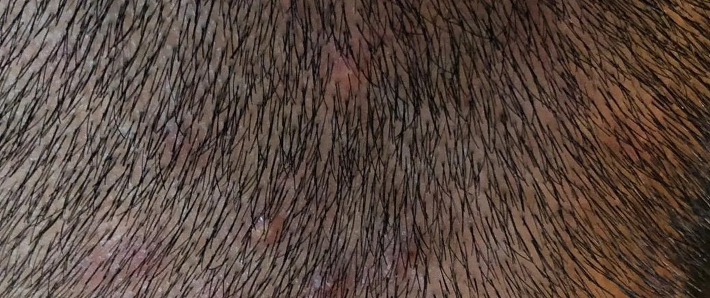
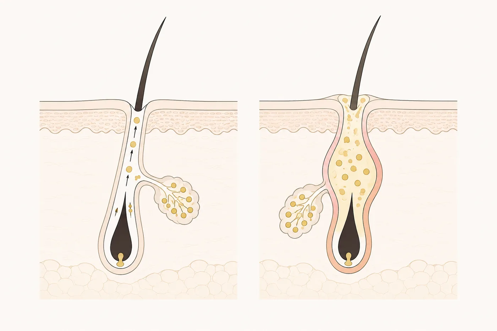

Sore bumps on your scalp that never quite clear.
Tender spots or pimples across the scalp, often along the hairline, at the crown, or at the back of the head. They may itch, sting when you brush or wash, and flare after a workout, a long day outdoors, or an afternoon under a cap or helmet. Some people have no visible spots at all and simply have a scalp that feels sore, hot, or irritated. In Singapore’s heat and humidity, it can be relentless.
The usual response is to treat it like facial acne, with scrubs, acne washes, and whatever worked on the face. It often does little, and can leave the scalp more irritated.

A scalp breakout begins the same way acne does anywhere else on the body. Sebum, sweat, dead skin, and product residue collect at the opening of the follicle. When that opening is blocked and the mixture is held against warm skin, the follicle becomes inflamed, and a tender, raised spot appears, often with pus.
Singapore’s climate adds to this. Heat and humidity raise both sebum and sweat, and anything that traps them against the scalp keeps them there: a cap, a helmet, hair tied back all day, a long commute, a workout you did not wash off promptly. Heavy styling products and rinsing that does not clear them properly add to it. This is why scalp breakouts tend to run in cycles rather than clear once and stay clear.

Not every scalp breakout is the same underneath. Some are bacterial. Some are driven by Malassezia, a yeast that lives on every scalp and overgrows in sweat, oil, and trapped heat. Breakouts of that kind tend to be small, uniform and itchy, look like acne, and do not respond to acne treatment, which is the usual reason they persist through months of consistent treatment. Seborrheic dermatitis can also sit alongside the breakouts and keep the scalp inflamed.
Most scalp breakouts settle without lasting harm to the hair. Hair can be lost temporarily from an inflamed area and grow back once the inflammation resolves. What deserves attention is inflammation that goes deeper or does not stop, because that can damage the follicle itself, and a follicle that is destroyed does not regrow hair. The signs worth acting on are specific: smooth patches where the follicle openings appear to have gone, deep, spongy-feeling lumps, breakouts that keep returning to the same spot, or hair that does not come back after a spot has cleared.
Most scalp breakouts are straightforward and improve once what is driving them is identified. The assessment is there to establish that this is what you have, to catch the cases where it is not, and then to remove everything that could be keeping it going.
A recurring or stubborn scalp problem often will not settle until the external variables are stripped back and controlled. Where a case is severe, prolonged or recurring, the approach is to rule out everything currently being used on the scalp, prescribe a defined routine of shampoo, conditioner and tonic, and nothing else alongside it, and shampoo daily through the treatment period so that dead skin and buildup are cleared before they feed the cycle. Where infection or scarring is suspected, the appropriate next step is a doctor or dermatologist rather than a treatment plan with us.
Is scalp acne the same as the acne on my face?
The mechanism is similar, a blocked and inflamed follicle, but the environment is not. The scalp carries far more follicles, produces more oil, and stays warm and covered for most of the day. That is why scalp breakouts recur more stubbornly, and why the products that cleared your face may do nothing here.
Why do my scalp breakouts keep coming back?
Usually because the conditions that produced them have not changed. Heat, sweat, oil, and anything that traps them against the scalp will reliably produce the next round, whatever you put on the last one. Recurrence is a trigger problem more often than a product problem. The second possibility is that the breakouts are not being driven by what you assumed, which is worth establishing before you spend another few months treating them.
Can scalp acne cause hair loss?
Most breakouts do not cause lasting hair loss. Hair can be lost temporarily from an inflamed area and grow back once it settles. Deep or persistent inflammation is the exception, because it can damage the follicle, and a follicle that is destroyed does not regrow hair. Breakouts that keep returning to the same place, leave smooth patches behind, or are followed by hair that does not come back are worth having looked at rather than waited out.
Can I use my facial acne products on my scalp?
Sometimes, but they are often the wrong fit and can irritate the scalp further. They also assume the breakout is the kind that responds to acne treatment, and not all of them are. Where Malassezia is involved, an acne product will not resolve it however diligently it is used. Establishing what is driving the breakout first means whatever you use is aimed at the actual cause.
Should I be washing my hair more often?
For an inflamed, flaking or breakout-prone scalp, usually yes, and daily is often appropriate. When the scalp is inflamed, dead skin and buildup accumulate faster, and leaving them sitting against a warm scalp feeds the cycle. Washing daily clears them before they do. The timing matters too: washing promptly after exercise or a long, sweaty day does more than simply washing more often in general. What does not help is aggressive scrubbing or harsh products, which inflame the scalp further. During a course of treatment the more important point is consistency, using only what has been prescribed and washing daily, so that nothing outside the plan is left to slow recovery.
I was told I have folliculitis. Is that the same thing?
For practical purposes, the two overlap heavily. Folliculitis is the clinical term for inflammation of the hair follicle, and it describes much of what people call scalp acne. Singapore’s National Skin Centre describes bacterial folliculitis of the scalp as pimple-like eruptions with tender red lumps that may develop pustules, which is exactly what most people mean by a scalp breakout. Where the cause is bacterial, a doctor may treat it with antibiotics. The label matters less than what is driving the inflammation and whether it is settling.
Book a Consultation
If your scalp keeps breaking out in sore or itchy bumps that will not settle, a consultation can establish what is driving the inflammation, whether the follicle itself is affected, and what is keeping the cycle going. You will leave with a plan suited to your scalp and to the way you actually live with it in this climate, and with a clear answer if the right next step is a doctor rather than us.
Book a Consultation